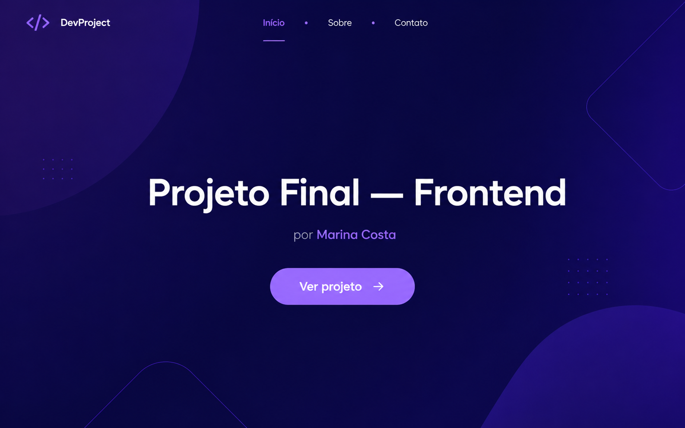
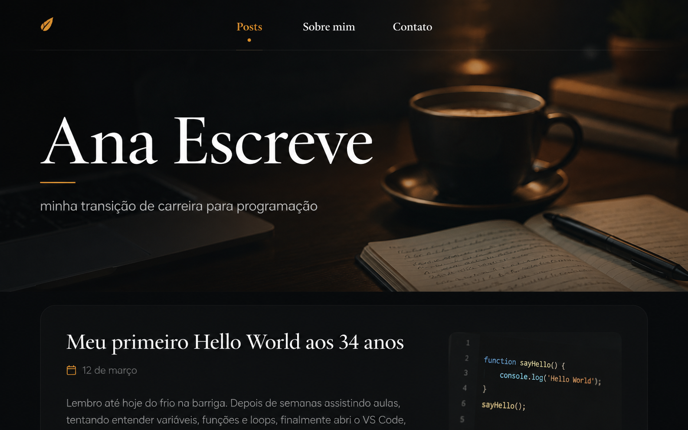
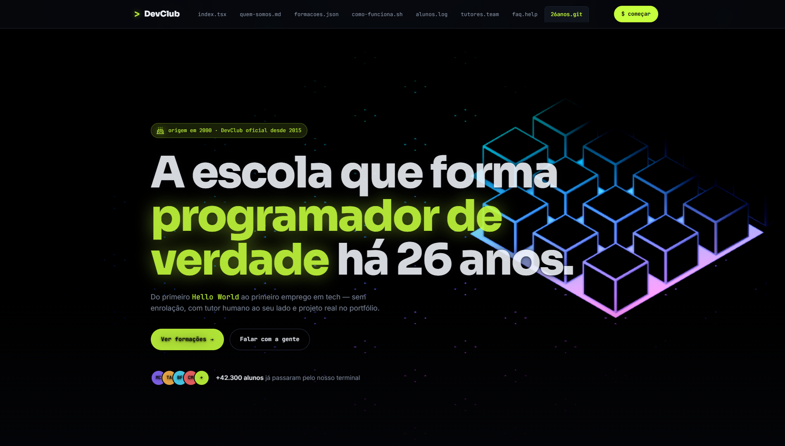
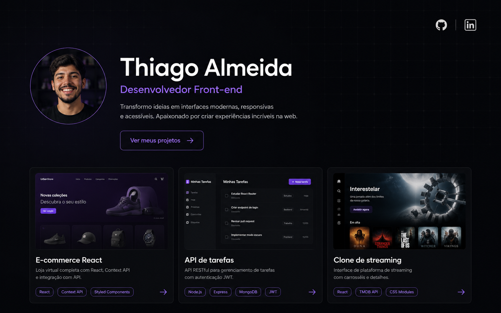
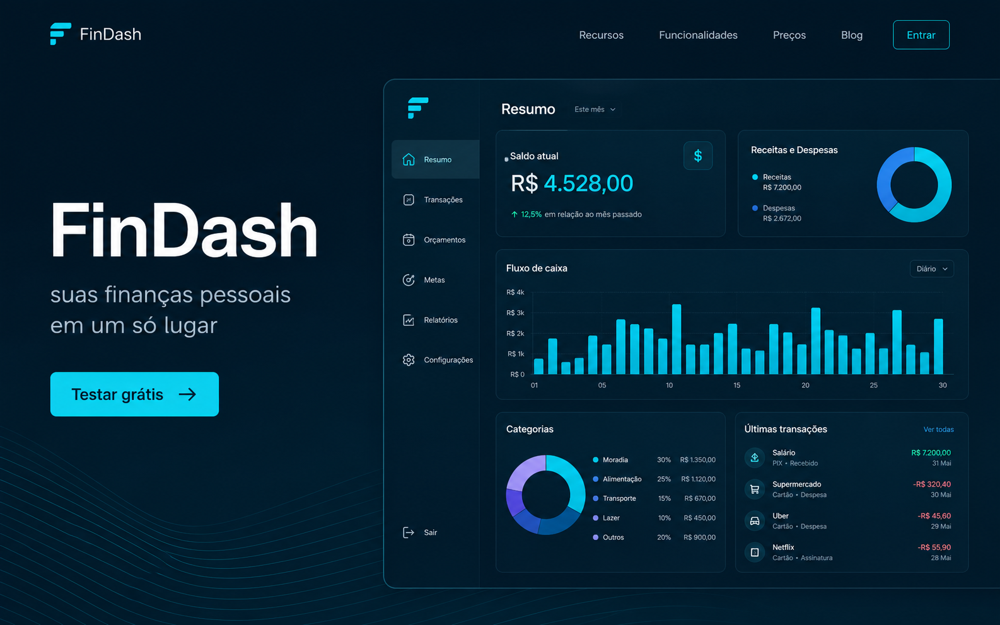
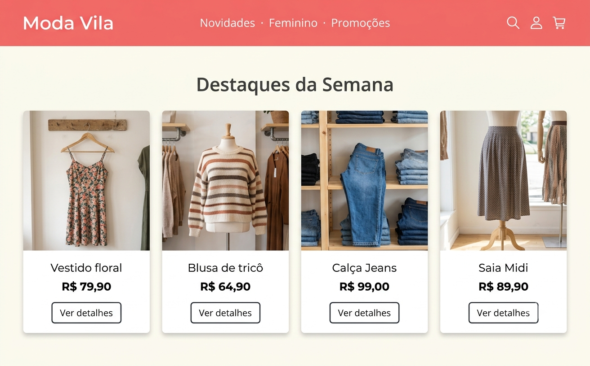
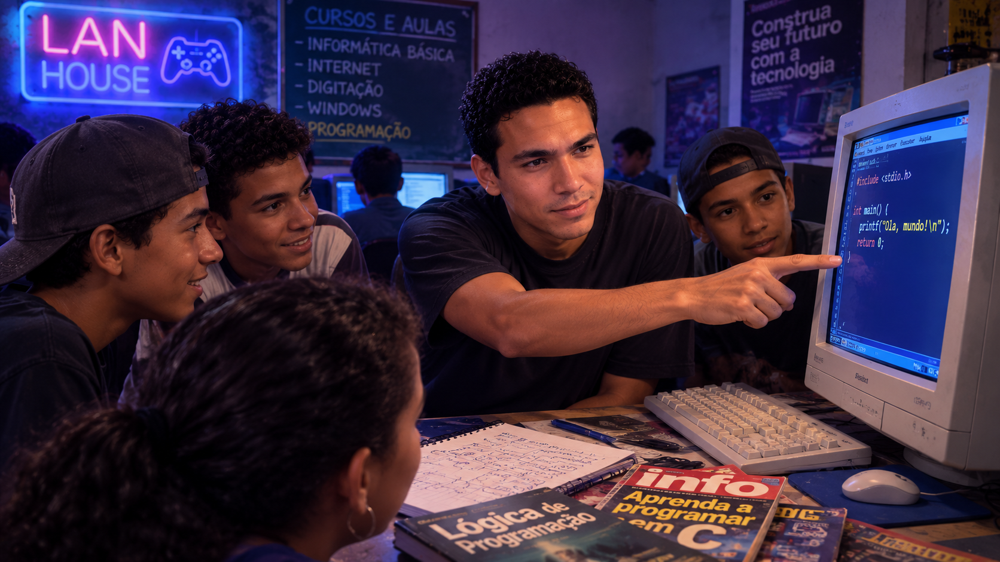
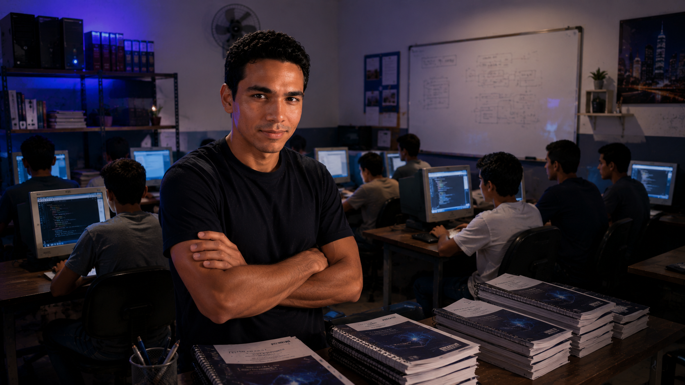
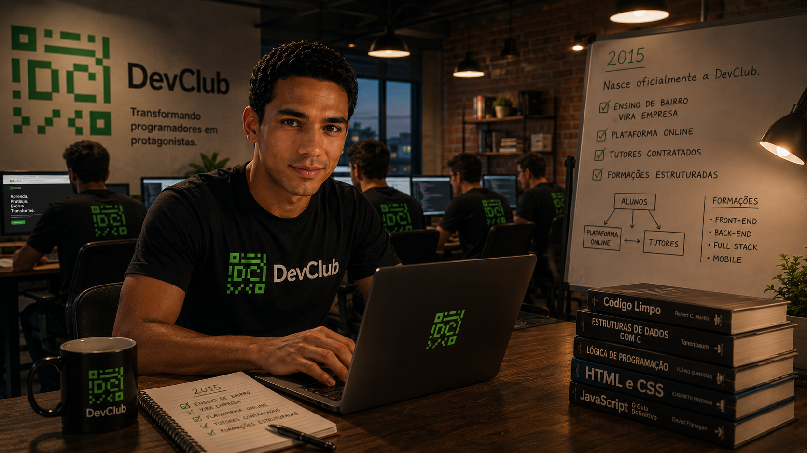
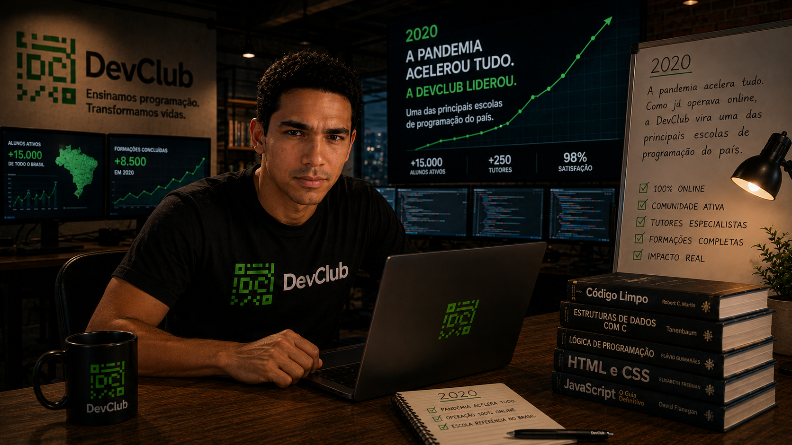

marinacosta.dev

Do primeiro Hello World ao primeiro emprego em tech — sem enrolação, com tutor humano ao seu lado e projeto real no portfólio.
+42.300 alunos já passaram pelo nosso terminal
// nossa história
No começo dos anos 2000, Rodolfo Mori descobriu programação numa lan house de bairro — dessas que cobravam por hora e vendiam Coca em lata. Estudava em livros, apostilas e revistas de informática, e aos poucos começou a ensinar o que aprendia pros outros jovens que apareciam por lá, usando um PC do próprio salão.
// virando estrutura
Em 2009, com o que juntou dando aula, Rodolfo montou a própria estrutura — computadores, apostilas e sala pra chamar de sua. Em 2015 esse projeto virou empresa: nasceu a DevClub, com o propósito de deixar programação acessível e formar gente pro mercado de tecnologia.
// como ensinamos
Aula prática, projeto real e tutor humano respondendo dúvidas. Nada de vídeo solto: aqui você constrói, erra, conserta e aprende — mesma cabeça daquela lan house, agora rodando pra milhares de alunos.
// pra quem é
Pra quem nunca escreveu uma linha de código e pra quem já programa e quer destravar a próxima etapa da carreira. Não pedimos diploma — pedimos vontade de aprender. É a mesma regra do começo.
Trilhas completas, com projeto real no portfólio e tutor acompanhando cada entrega.
HTML, CSS, JavaScript e React do zero ao primeiro layout em produção.
Node.js, banco de dados e APIs que aguentam tráfego de verdade.
A trilha completa: front, back, deploy e um projeto real no portfólio.
Portfólio, entrevista técnica e a rede de contatos que abre a primeira vaga.
// passe o mouse pra escolher · use ← → ou clique nos pontinhos
Cada etapa tem entregável real, tutor acompanhando e prazo definido. Nada de "assiste quando puder".
Semana 1 você já está escrevendo código. Lógica, HTML, CSS e JavaScript com exercícios curtos e feedback imediato do tutor.
A cada módulo, um projeto real: landing, dashboard, API completa. Tudo commitado no seu GitHub, pronto pra mostrar.
Tutor humano revisa seu código, aponta o que dá pra melhorar e responde suas dúvidas em até 12h úteis.
CV técnico, LinkedIn, mock interview e a rede de +340 empresas parceiras que já contratam nossos alunos.
"Eu achava que programar era coisa de gênio. A DevClub me mostrou que era só prática."
"Fiz o fullstack à noite, depois do trabalho. Seis meses depois pedi demissão pro emprego novo."
"Ninguém perguntou meu diploma na entrevista. Perguntaram meu GitHub."
"Comecei achando que era tarde. A DevClub não perguntou minha idade, só meu código."
Primeira página, primeiro deploy, primeiro orgulho. Alguns dos trabalhos feitos durante as formações.






A gente começou antes da banda larga. E continua rodando.
Rodolfo Mori descobre programação numa lan house de bairro. Livros, apostilas e revistas de informática são os principais aliados no estudo.

Começam as primeiras aulas informais, num computador da lan house. Parceria com o dono do salão, turmas pequenas de jovens do bairro.
A banda larga chega ao Brasil de vez. As aulas ficam mais rápidas, o material acompanha e a fila de alunos aumenta.

Rodolfo monta a própria estrutura — computadores, apostilas e sala pra chamar de sua. O projeto começa a virar escola.

Nasce oficialmente a DevClub. O ensino de bairro vira empresa: plataforma online, tutores contratados e formações estruturadas.

A pandemia acelera tudo. Como já operava online, a DevClub vira uma das principais escolas de programação do país.
+42.000 formados, 340+ empresas contratando alunos da DevClub. Mesma missão da lan house — só que em escala nacional.
Inscrições abertas · turma reduzida com acompanhamento de tutor
78% das vagas já preenchidas · restam poucas cadeiras
As dúvidas que a gente escuta todo dia no chat, respondidas sem enrolação.
// sem enrolação: alguém do time te chama em até 1 dia útil